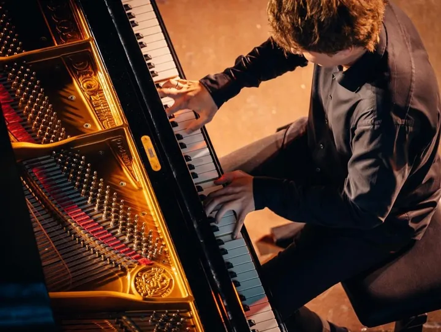

da dom 10 mag a lun 23 nov
Verona Piano Festival
Verona Piano Festival , manifestazione giunta alla sua quattordicesima edizione, propone ben 28 appuntamenti legati da un unico filo conduttore: la musica e i suoi protagonisti .
 Indicazioni
Indicazioni
- Costi e prenotazioni
- Costo non indicato · Prenotazione non indicata
- Programma
- Programma da verificare. Apri la fonte ufficiale per orari e possibili aggiornamenti.
- In caso di maltempo
- Nessuna indicazione specifica pubblicata.
- Note
- Acquisito automaticamente dalla fonte.
L’EVENTO
Descrizione completa
Verona Piano Festival , manifestazione giunta alla sua quattordicesima edizione, propone ben 28 appuntamenti legati da un unico filo conduttore: la musica e i suoi protagonisti .
Un ’edizione straordinaria, capace di coniugare tradizione e innovazione , esaltando il valore della Città di Verona come autentica capitale della musica. Un’offerta culturale di alto livello che incontra le tradizioni e il patrimonio storico-artistico di una città e della sua provincia con diversi linguaggi artistici, dove gli appuntamenti della musica sinfonica si avvicenderanno ai concerti di musica da camera e finanche al teatro.
Il Festival si apre con un'anteprima speciale di tre giornate nella cornice della Sala Casarini dell'Hote Due Torri, per poi proseguire in particolari e suggestive location nel centro storico di Verona, in Valpolicella, sul Lago di Garda, in Pianura, in Lessinia e in Valpantena.
Protagonisti dei diversi appuntamenti saranno orchestre, gruppi da camera vocali e strumentali, solisti, giovani artisti vincitori di premi internazionali e musicisti già acclamati in tutto il mondo.
IL PROGRAMMA
Programma e orari
Appuntamenti raccolti dalle fonti elencate. Dove manca un orario, non è ancora disponibile in questa scheda.
Programma pubblicato
- 2026-05-10 — 2026-05-10 · 17:30:00
- 2026-05-24 — 2026-05-24 · 17:30:00
- 2026-05-31 — 2026-05-31 · 17:30:00
- 2026-06-08 — 2026-06-08 · 21:00:00
- 2026-06-16 — 2026-06-16 · 21:00:00
- 2026-06-22 — 2026-06-22 · 21:00:00
- 2026-06-30 — 2026-06-30 · 21:00:00
- 2026-07-06 — 2026-07-06 · 21:00:00
- 2026-07-08 — 2026-07-08 · 21:00:00
- 2026-08-17 — 2026-08-17 · 21:00:00
- 2026-08-24 — 2026-08-25 · 21:00:00
- 2026-09-14 — 2026-09-14 · 21:00:00
- 2026-09-30 — 2026-10-03 · 10:00:00
- 2026-10-04 — 2026-10-04 · 17:00:00
- 2026-10-13 — 2026-10-13 · 20:30:00
- 2026-10-27 — 2026-10-27 · 20:30:00
- 2026-11-10 — 2026-11-10 · 20:30:00
- 2026-11-23 — 2026-11-23 · 20:30:00
INFORMAZIONI UTILI
Prima di partire
- Controllare la fonte prima di partire.
ORGANIZZAZIONE